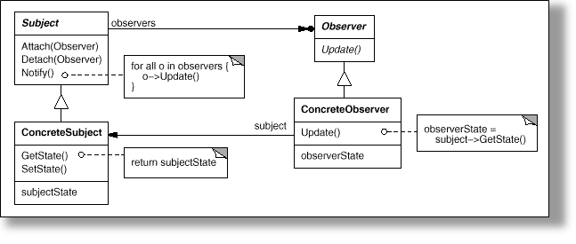
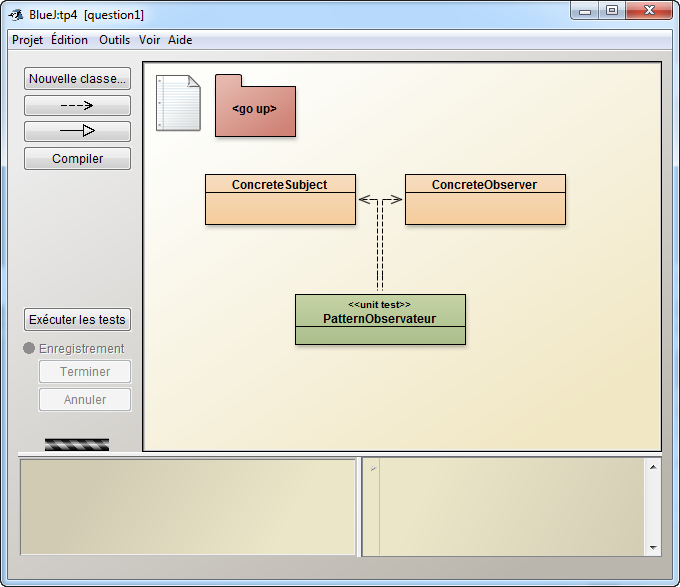
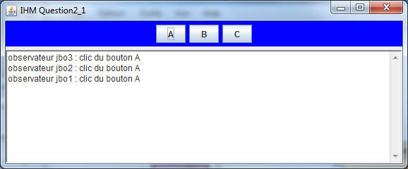
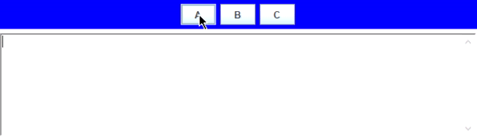
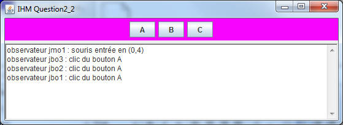
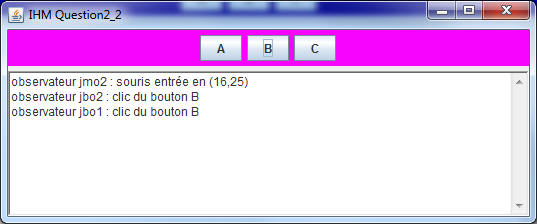
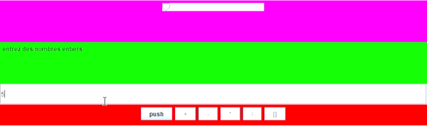
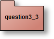

Pattern Observateur/Observé
Pattern Observateur/Observé
Soit le Pattern Observateur en notation UML selon LA référence en pattern : "Design
Patterns Elements of Reusable Object-Oriented Software" , Erich Gamma,
Richard Helm, Ralph Johnson and John Vlissides (GOF) , ed.
Addison-Wesley, 1995. (existe en français)

En Java, le paquetage java.util implémente ce Pattern.
Il propose la classe Observable pour "Subject" du diagramme ci dessus et l'interface Observer (même nom dans le diagramme ci dessus) (lire leur javadoc dans la documentation JAVA).
Les participants
Premier exemple d'implantation de ce pattern en Java.
Classes retenues et proposée dans le paquetage "question1" :
Pour cette première question, nous souhaitons développer une classe de tests afin de "vérifier" le fonctionnement de l'implantation de ce Pattern,
Quelques exemples de "validation", d'assertions
Extrait du code de vérification : classe "PatternObservateur"
Il propose la classe Observable pour "Subject" du diagramme ci dessus et l'interface Observer (même nom dans le diagramme ci dessus) (lire leur javadoc dans la documentation JAVA).
Les participants
- L'observé : la classe Subject ou java.util.Observable
- L'observateur : ici l'interface Observer ou java.util.Observer
- L'observé concret : la classe ConcreteSubject qui hérite de Observable
- L'observateur concret :la classe ConcreteObserver , qui implémente l'interface Observer, et qui utilise une référence du sujet ConcreteSubject qu'il observe et réagit à chaque mise à jour
Premier exemple d'implantation de ce pattern en Java.
Classes retenues et proposée dans le paquetage "question1" :
- La classe ConcreteSubject hérite de java.util.Observable (l'observé) et gère une liste de chaines (String), chaque modification de cette liste - introduction d'une nouvelle chaîne - (cf. méthode insert) engendre une notification aux observateurs en passant la nouvelle chaîne en paramètre...
- La classe ConcreteObserver (observateur) à chaque notification, affiche cette nouvelle chaîne et mémorise l'origine des notifications (attribut "senders") et les paramètres transmis (attribut "parameters").
- La mémorisation du notifiant et du paramètre transmis utilise deux piles (java.util.Stack
), senders et arguments, accessibles de l'"extérieur" par les méthodes "public Stack senders(){...}" et "public Stackparameters(){...}"
Pour cette première question, nous souhaitons développer une classe de tests afin de "vérifier" le fonctionnement de l'implantation de ce Pattern,
Quelques exemples de "validation", d'assertions
- Vérifier que lors d'une notification, TOUS les observateurs ont bien été informés,
- Vérifier que les arguments ont bien été transmis
- Vérifier que le notifiant est le bon ...etc ...
Extrait du code de vérification : classe "PatternObservateur"
public class PatternObservateur extends junit.framework.TestCase {
public void testNotify() {
ConcreteSubject list;
ConcreteObserver observer;
list = new ConcreteSubject(); // création d'un "observé" constitué d'une liste
observer = new ConcreteObserver(); // création d'un observateur
list.addObserver(observer); // ajouter cet observateur à la liste
list.insert("il fait beau, ce matin"); // modification de cette liste, l'observateur doit
// (dervrait) être notifié
// "vérification" :
assertFalse(observer.senders().empty()); // elle ne doit pas être vide,
assertEquals(list, observer.senders().pop()); // est-ce le bon émetteur ?
assertEquals("il fait beau, ce matin", observer.arguments().pop()); // le paramètre reçu est-il correct ?
}
//...
Un exemple de test avec BlueJ: vérification qu'un observateur est bien notifié avec le paramètre bien reçu.
Complétez les 3 méthodes de test de la classe "PatternObservateur".
Complétez les 3 méthodes de test de la classe "PatternObservateur".

 Introduction aux événements de l'AWT
Introduction aux événements de l'AWT
(paquetage java.awt.event, évènements engendrés par une instance de la classe javax.swing.JButton)
En java, les api AWT ou SWING utilise le pattern Observateur pour la gestion des évènements, seuls les noms des méthodes diffèrent. Les notifications sont ici engendrées par un changement d'état de l'interface graphique : un clic sur un bouton, un déplacement de souris, etc...
Exemple :
Compléter les classes IHMQuestion2_1 et JButtonObserver afin d'obtenir les mêmes copies écran
Une idée du comportement attendu, depuis votre répertoire du tp exécutez cette commande tp4> java -jar ihm_q2_1.jar
Ci-dessous un gif animé écrit par M. HAMZA Sadouk (NFP121-2019)
En java, les api AWT ou SWING utilise le pattern Observateur pour la gestion des évènements, seuls les noms des méthodes diffèrent. Les notifications sont ici engendrées par un changement d'état de l'interface graphique : un clic sur un bouton, un déplacement de souris, etc...
Exemple :
- La classe Observable "est remplacée par" la classe javax.swing.JButton
- La méthode addObserver(Observer o) "correspond à" addActionListener(ActionListener l)
- La méthode notifyObservers(Object arg) "est remplacée par" actionPerformed(ActionEvent ae)
- L'interface Observer "est remplacée par" l'interface java.awt.event.ActionListener
- Le bouton A a 3 observateurs (jbo1, jbo2 et jbo3)
- 
- Le bouton B a 2 observateurs (jbo1 et jbo2)
-

- Le bouton C a 1 observateur (jbo1)
-

Compléter les classes IHMQuestion2_1 et JButtonObserver afin d'obtenir les mêmes copies écran
Une idée du comportement attendu, depuis votre répertoire du tp exécutez cette commande tp4> java -jar ihm_q2_1.jar
Ci-dessous un gif animé écrit par M. HAMZA Sadouk (NFP121-2019)

 La classe JMouseObserver
La classe JMouseObserver
Cette fois :
Une idée du comportement attendu : Une idée du comportement attendu : tp4> java -jar ihm_q2_2.jar

- La méthode addObserver est remplacée par java.awt.event.addMouseListener.
- La méthode notifyObservers() est remplacée par mouseXXXXX(MouseEvent ae).
- L'interface Observer est remplacée par l'interface java.awt.event.MouseListener.
A chaque déplacement de la souris vers l'un des boutons, un observateur est réveillé :
- Le bouton A a 4 observateurs (jmo1) et (jbo1, jbo2 et jbo3), ici la souris est entrée sur le bouton A
-

- la souris est entrée et un clic a eu lieu sur le bouton A(cf. question2_1)
- 
- Déplacement vers le bouton B avec un clic
- 
- déplacement vers le bouton C avec un clic
-

Compléter les classes IHMQuestion2_2 et JMouseObserver afin d'obtenir les mêmes copies écran
Une idée du comportement attendu : Une idée du comportement attendu : tp4> java -jar ihm_q2_2.jar
Ci-dessous un gif animé écrit par M. HAMZA Sadouk (NFP121-2019)
 Le modèle MVC
Le modèle MVC

source : Java BluePrints Model-View-Controller
Selon le "pattern MVC" (Modèle-Vue-Contrôleur)
- Le Modèle contient la logique et l'état de l'application, il prévient ses observateurs lors d'un changement d'état.
- La Vue représente l'interface utilisateur.
- Le Contrôleur assure la synchronisation entre la vue et le modèle.
L'évaluation d'une expression arithmétique peut être réalisée par l'usage d'une pile d'entiers
Par exemple l'expression 3 + 2 engendre la séquence :
empiler(3);
empiler(2);
empiler(depiler() + depiler());
de même que l'expression 3 + 2 * 5 correspond à la séquence :
empiler(3);
empiler(2);
empiler(5);
empiler(depiler() * depiler());
empiler(depiler() + depiler());
L'architecture logicielle induite par l'usage du paradigme MVC nous donne
- Le Modèle est une pile (classe PileModele<T>).
Le Modèle lors d'un changement d'état prévient ses observateurs. - La Vue correspond à l'affichage de l'état de la pile (classe Vue).
La vue s'inscrit auprès du Modèle lors de l'appel du constructeur d'une Vue, à chaque notification, la vue s'enquiert de l'état du modèle et l'affiche. - Le Contrôleur gère les évènements issus des boutons +, -, *, /,[] (classe Controleur).
Le contrôleur gère localement les écouteur(Listener) des boutons de l'IHM, notons que la gestion des boutons utilise une architecture MVC. - L'IHM crée, assemble le modèle, la vue et le contrôle (classe IHMCalculette).

Une des implémentations des piles issue du tp3, est installée dans le
package tp3, proposer l'implémentation des classes PileModele et Contrôleur.
Selon "MVC" la classe PileModele<T> hérite de la classe Observable et implémente PileI, à chaque changement d'état, modification de la pile les observateurs inscrits seront notifiés.
La pile du tp3, sans modification, est utilisée, seules certaines méthodes seront redéfinies, enrichies, décorées...
La classe Controleur implémente les actions, évènements engendrés par l'utilisateur, à chaque opération souhaitée le contrôleur altère les données du modèle de la pile, celle-ci à chaque occurrence d'un changement d'état prévient ses observateurs, la vue en est un.
Une idée du comportement attendu : tp4> java -jar ihm_q3.jar
Selon "MVC" la classe PileModele<T> hérite de la classe Observable et implémente PileI
La pile du tp3, sans modification, est utilisée, seules certaines méthodes seront redéfinies, enrichies, décorées...
La classe Controleur implémente les actions, évènements engendrés par l'utilisateur, à chaque opération souhaitée le contrôleur altère les données du modèle de la pile, celle-ci à chaque occurrence d'un changement d'état prévient ses observateurs, la vue en est un.
Ci-dessous un gif animé écrit par M. HAMZA Sadouk (NFP121-2019)

Notez qu'un mauvais format de nombre ou une division par zéro n'ont aucune incidence.
Soumettez cette question à JNEWS avant de poursuivre.
 Critiquez cette proposition d'architecture
Critiquez cette proposition d'architecture
Par exemple
Proposer votre architecture MVC , un schéma de type diagramme UML, les interfaces java et votre proposition en quelques lignes sur votre rapport suffiront.
- Le modèle pourrait être la calculette constituée pour ses calculs internes d'une pile,
- Pourquoi les "listeners" des boutons sont-ils locaux au contrôleur ?
- Ce choix de découpage MVC vous parait-il réaliste ?
- ...
Proposer votre architecture MVC , un schéma de type diagramme UML, les interfaces java et votre proposition en quelques lignes sur votre rapport suffiront.

Postliminaire ou modification de l'application respectant le principe "MVC"
Ajouter cette nouvelle Vue au modèle, vérifiez que seule la classe
IHMCalculette est concernée par cet ajout, et que les modifications du source sont mineures.
public class Vue2 extends JPanel implements Observer {
private JSlider jauge;
private PileModele<Integer> pile;
public Vue2(PileModele<Integer> pile) {
super();
this.pile = pile;
this.jauge = new JSlider(JSlider.HORIZONTAL, 0, pile.capacite(), 0);
this.jauge.setValue(0);
setLayout(new FlowLayout(FlowLayout.CENTER));
this.jauge.setEnabled(false);
add(this.jauge);
setBackground(Color.magenta);
pile.addObserver(this);
}
public void update(Observable obs, Object arg) {
jauge.setValue(pile.taille());
}
}